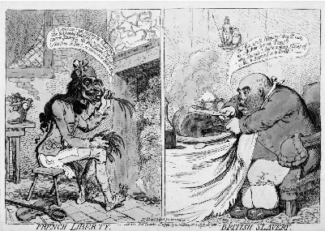

|
British
Satirical Prints
The Department of Prints and Drawings holds the national collection
of British single-sheet satirical prints from the seventeenth to
the nineteenth centuries. These prints, for the most part, are listed
and described in the Catalogue of Political and Personal Satires
in the British Museum by Frederic George Stephens (four volumes
covering prints up to 1770 and published 1870-1883) and Mary Dorothy
George (seven volumes covering prints between 1771-1832 and published
1935-1954). This catalogue has formed the basis for all later studies
of British caricature and graphic satire. A microfilm reproducing
most of the prints published by Chadwyck-Healy, Cambridge in 1978
can be consulted in the Department, and at the British Library and
elsewhere.
Above:
James Gillray, French Liberty/British Slavery, 1972, hand-coloured
etching, 250 x 355mm, BM Sat. 8145
Caricature,
the exaggeration of an individual's physiognomy or person for comic
effect, was practised in Italy early in the seventeenth century
when artists increasingly drew for pleasure and entertainment. It
was introduced into England in the eighteenth century by gentlemen
returning from the Grand Tour. George Townshend (1724-1807), an
aristocratic amateur, was among the first to use personal caricature
in political satires. The great satirist William Hogarth (1697-1764),
however, distanced himself from caricature preferring to portray
what he saw as the true 'character' of his subjects.
The 'golden
age' when James Gillray (1756-1815), Thomas Rowlandson (1756-1827)
and George Cruikshank (1792-1878) were active, occurred between
1780 and 1830. Most satirical prints were produced in London and
were sold singly by publishers and booksellers, such as S. W. Fores
and William Holland, who also put together collections for clients
and even hired them out. A wide range of prices reflected the very
different sizes and degrees of sophistication of satirical prints.
In 1807 the publisher Thomas Tegg started a business selling cheap,
crudely coloured prints aimed at a wide market. Later in the nineteenth
century the work of John 'HB' Doyle (1797-1868) and the journal
Punch, founded in 1841, inaugurated a milder form of graphic
satire. Prints ceased to be published as single sheets, but rather
as part of newspaper and periodical illustration. The term 'cartoon'
came into general use in the second half of the century.
The core of
the Department's representation of British satires is the collection
of more than ten thousand prints put together by Edward Hawkins,
Keeper of Antiquities in the British Museum, that was purchased
in 1868. Other important groups of prints came from Sarah Sophia
Banks (1818), William Smith (1851) and George Cruikshank, whose
widow left a huge collection of his prints together with more than
four thousand preliminary drawings. There
is an ongoing acquisition policy and much new material has come
into the collection since the publication of the George catalogue.
For example, one thousand items, including many by Richard Newton
(1777-1798), came in 1948 from the social historian Francis Klingender,
with a further group by the same artist from the collection of Kenneth
Monkman in 2001.
Other
Collections
| London |
British
Library
Guildhall Library
Museum of London
National Portrait Gallery
Victoria and Albert Museum
Wellcome Institute |
| UK |
Whitworth
Gallery, Manchester |
| France |
Bibliothèque
Nationale, Paris |
| Germany |
Wilhelm-Busch-Museum,
Hanover |
| USA |
Henry
E. Huntington Library, San Marino, California
Library of Congress, Washington, DC *
New York Public Library
Pierpont Morgan Library, New York *
Lewis Walpole Library, Farmington, Connecticut *
Yale Center for British Art, New Haven |
| *
Microfilms available for consultation in The British Museum,
Department
of Prints and Drawings |
Further
Reading
Atherton,
H.M. Political Prints in the Age of Hogarth.
Oxford University Press, 1974
Bindman,
D. The Shadow of the Guillotine: Britain and the French Revolution.
British Museum Press, 1989
Bindman,
D. Hogarth and his Times: Serious Comedy. British Museum
Press, 1997
Donald,
D. The Age of Caricature: Satirical Prints in the Reign of George
III. Yale University Press and London, 1996
George,
M.D. English Political Caricature. 2 Vols. Oxford University
Press, 1959
Godfrey,
R. English caricature: 1620 to the Present. Victoria and
Albert Museum, 1984
Godfrey,
R. Gillray and the Art of Caricature. Tate Publishing,
2001
|